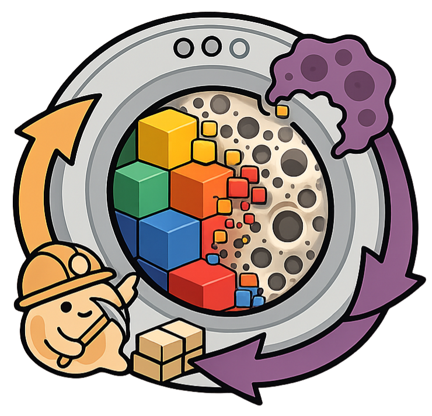
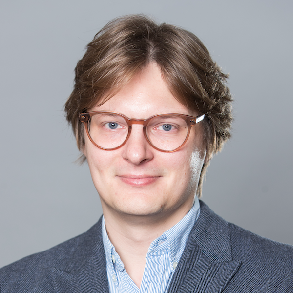

Cancer–Bone Mechanobiology
Investigating how bone metastases and the mechanical environment influence one another, and how to quantify treatment response.
BONE METASTASES · ONGOING RESEARCHResearch & projects ↗DEPARTMENT OF RADIOLOGY · UNIVERSITY OF CALGARY
We combine medical imaging, computational modelling, and machine learning to study how mechanical forces shape tissue behaviour.
Our work connects cancer–bone interactions, spinal alignment, and bone adaptation.
RESEARCH
We study how the mechanical environment influences tissue behaviour, combining medical imaging with computational models in oncology, spinal alignment, and bone adaptation.
Investigating how bone metastases and the mechanical environment influence one another, and how to quantify treatment response.
BONE METASTASES · ONGOING RESEARCHResearch & projects ↗Studying how spinal alignment changes loading, and how those mechanical conditions relate to degeneration and tissue adaptation.
ALIGNMENT · LOADING · DEGENERATIONResearch & projects ↗Mapping local bone formation and resorption over time, and relating these changes to the mechanical environment.
HR-pQCT · MICRO-CT · MECHANOREGULATIONResearch & projects ↗Medical imaging · CT, MRI, HR-pQCT and micro-CT · Finite element modelling · Machine learning and deep learning · Longitudinal analysis
Learning methods support tasks such as segmentation and image quality control. Mechanical models help connect what we see in an image with how tissue carries load.
JOIN THE LAB
Cancer–Bone Mechanobiology
Develop imaging-based measures of treatment response and investigate how the mechanical environment relates to metastatic growth.
Spinal Alignment & Mechanobiology
Combine CT, MRI and radiographs to study how spinal alignment, loading and tissue degeneration change together over time.
You are curious about how tissues respond to mechanical conditions, enjoy quantitative work, and want to connect methods with biological or clinical questions.
Engineering, computer science, physics, biomedical sciences, and related backgrounds are welcome. Coding or image-analysis experience is useful, but you do not need to know every method already. I value careful work, initiative, and clear communication.
Email a short introduction, CV, intended degree or placement, available dates, and the project you are interested in. Include a relevant project or code link if you have one.
Email Matthias ↗MSc and PhD applicants from Canada and internationally are welcome. Get in touch to discuss your research interests, the relevant programme, supervision, funding, and application process.
UCalgary graduate admissions ↗We welcome enquiries about honours theses, summer research, co-op placements, and research projects for course credit. Share your interests, available dates, and any requirements from your programme.
I am happy to supervise thesis projects from international BSc and MSc students and have experience supervising students across Europe and Asia. Research stays are also welcome.
Please get in touch well in advance of your intended visit to allow enough time for visa arrangements and the visiting-student process.
SOFTWARE & RESOURCES
We develop and contribute to open-source tools for medical image analysis and computational biomechanics. These resources support reproducible workflows and shared research methods.
FEATURED SOFTWARE · 3D SLICER
A Slicer interface for bone-imaging workflows: image import, segmentation, longitudinal remodelling, microarchitecture, motion grading, and finite element analysis.
SlicerBoneImagingToolbox brings reusable analysis packages into a visual environment for working with bone images. The toolbox connects image processing, batch workflows, and computational analysis rather than requiring a separate interface for every step.
3D SLICER · PYTHON · DEEP LEARNING
PUBLICATIONS
Publications by Matthias Walle and collaborators in medical imaging, computational biomechanics, bone adaptation, and research methods.
Annals of Biomedical Engineering
Victor Babu Kassey, Matthias Walle, Diana Yeritsyan, Jonathan Egan, Angela R. Kassey, Ahmad Hedayatzadeh Razavi, Yaotang Wu, Brian D. Snyder, Edward K. Rodriguez, Jerome L. Ackerman, Ara Nazarian.
Topics in Magnetic Resonance Imaging
Victor Babu Kassey, Matthias Walle, Jonathan Egan, Daniel V Kassey, Diana Yeritsyan, Yaotang Wu, Brian D. Snyder, Edward K. Rodriguez, Jerome L. Ackerman, Ara Nazarian.
Medical Engineering & Physics
Bryn E Matheson, Matthias Walle, Steven K Boyd.
JBMR Plus
Serena Bonaretti, Mojtaba Barzegari, Melissa S. A. M. Bevers, et al. (including Matthias Walle).
npj Microgravity
Bryn E. Matheson, Matthias Walle, Annabel R Bugbird, Marissa J. F. Rosenberg, Jaime Mateus, Steven K. Boyd.
The Oncologist
Susan Ziolkowski, Bryn E Matheson, Steven K Boyd, Matthias Walle, Jasmine Gill, John Walker, Thomas Salopek, Joshua F Baker, Ates Fettahoglu, Carrie Ye.
Biomechanics and Mechanobiology of Bone · Book chapter
Matthias Walle, Bryn E. Matheson, Steven K. Boyd.
Journal of the American Society of Nephrology
Susan Ziolkowski, Bryn E. Matheson, Matthias Walle, Ates Fettahoglu, Michael John Gill, Steven K. Boyd, Carrie Ye
Journal of Bone and Mineral Research
Danielle E Whittier, Matthias Walle, Penny R Atkins, Caitlyn J Collins, Matthias A Zumstein, Patrik Christen, Kurt Lippuner, Ralph Müller.
GigaScience
Matthias Walle, Bryn E Matheson, Steven K Boyd.
OSTEOPOROSIS INTERNATIONAL
Annabel R. Bugbird, Bryn E. Matheson, Matthias Walle, Nathan J. Neeteson, Nina Pavlovic, Callie E. Stirling, Danielle E. Whittier, Steven K. Boyd.
NPJ MICROGRAVITY
Bryn E. Matheson, Matthias Walle, Anna-Maria Liphardt, Paul A. Hulme, Martina Heer, Sara R. Zwart, Jean D. Sibonga, Scott M. Smith, Leigh Gabel, Steven K. Boyd.
JOURNAL OF MAGNETIC RESONANCE
Victor B. Kassey, Matthias Walle, Diana Yeritsyan, Daniel V. Kassey, Yaotang Wu, Brian D. Snyder, Edward K. Rodriguez, Jerome L. Ackerman, Ara Nazarian.
Science Advances
Matthias Walle, Leigh Gabel, Danielle E. Whittier, Anna-Maria Liphardt, Paul A. Hulme, Martina Heer, Sara R. Zwart, Scott M. Smith, Jean D. Sibonga, Steven K. Boyd.
FRONTIERS IN BIOENGINEERING AND BIOTECHNOLOGY
Matthias Walle, Diana Yeritsyan, Mohammadreza Abbasian, Ramin Oftadeh, Ralph Müller, Ara Nazarian.
JOURNAL OF BONE AND MINERAL RESEARCH
Matthias Walle, Ankita Duseja, Danielle E Whittier, Tatiane Vilaca, Margaret Paggiosi, Richard Eastell, Ralph Müller, Caitlyn J Collins.
BONE
Victor B. Kassey, Matthias Walle, Jonathan Egan, Diana Yeritsyan, Indeevar Beeram, Yaotang Wu, Brian D. Snyder, Edward K. Rodriguez, Jerome L. Ackerman, Ara Nazarian.
JOURNAL OF MAGNETIC RESONANCE IMAGING
Víctor B. Kassey, Matthias Walle, Jonathan Egan, Diana Yeritsyan, Indeevar Beeram, Sharon P. Kassey, Yaotang Wu, Brian D. Snyder, Edward K. Rodriguez, Jerome L. Ackerman, Ara Nazarian.
BONE
Danielle E. Whittier, Matthias Walle, Denis Schenk, Penny R. Atkins, Caitlyn J. Collins, Philippe Zysset, Kurt Lippuner, Ralph Müller.
FRONTIERS IN BIOENGINEERING AND BIOTECHNOLOGY
Francisco C. Marques, Daniele Boaretti, Matthias Walle, Ariane C. Scheuren, Friederike A. Schulte, Ralph Müller.
BONE
Matthias Walle, Dominic Eggemann, Penny R. Atkins, Jack J. Kendall, Kerstin Stock, Ralph Müller, Caitlyn J. Collins.
BONE
Matthias Walle, Danielle E. Whittier, Denis Schenk, Penny R. Atkins, Michael Blauth, Philippe Zysset, Kurt Lippuner, Ralph Müller, Caitlyn J. Collins.
Bone Reports
Matthias Walle, Danielle E. Whittier, Ralph Müller, Caitlyn J. Collins
CURRENT OSTEOPOROSIS REPORTS
Matthias Walle, Danielle E. Whittier, Morten Frost, Ralph Müller, Caitlyn J. Collins.
Bone Reports
Matthias Walle, Francisco Correia Marques, Nicholas Ohs, Michael Blauth, Ralph Müller, Caitlyn J. Collins
SCIENTIFIC REPORTS
Angad Malhotra, Matthias Walle, Graeme R. Paul, Gisela A. Kuhn, Ralph Müller.
FRONTIERS IN BIOENGINEERING AND BIOTECHNOLOGY
Matthias Walle, Francisco C. Marques, Nicholas Ohs, Michael Blauth, Ralph Müller, Caitlyn J. Collins.
PEOPLE

Principal Investigator · Assistant Professor
I am an Assistant Professor in the Department of Radiology at the University of Calgary. I work at the intersection of medical imaging, computational modelling, and musculoskeletal research. My research examines how the mechanical environment influences tissue behaviour using imaging and simulation methods.
I completed my PhD at ETH Zurich, where I received the ETH Medal for my work on bone health in diabetes and developed methods to study bone adaptation using longitudinal high-resolution imaging. At the University of Calgary, I combine medical imaging, finite element modelling, and machine learning to study bone metastases, spinal alignment, and bone mechanobiology.
My work spans method development, clinical applications, and open research software, including the Bone Imaging Toolbox for 3D Slicer. Students can work across these areas, from developing an analysis method to using it to address a biological or clinical question.
RESEARCH CONNECTIONS
An interactive view of co-authorship connections from Matthias's publication record. Select an institution to see people and shared papers.
65 institutions · 33 indexed works · Updated 2026-10-02 · OpenAlex
Select an institution to explore its publications.
Locations reflect institutional affiliations recorded on papers, not necessarily current workplaces or active lab partnerships. Publication databases can contain missing or incorrect records. Suggest a correction ↗
OUTREACH & COMMUNITY
Learn more about our research through interviews, talks, and public-engagement activities.
RADIO · NDR INFO · GERMAN
January 2025
An interview on bone loss during spaceflight and what it can teach us about skeletal health on Earth.
With G. Meyer, A. Liphardt, and Matthias Walle.
RADIO · DEUTSCHLANDFUNK · GERMAN
January 2025
A Forschung aktuell broadcast on spaceflight and bone health.
Knochenjob Weltall und Himmliche Highlights 2025. With G. Meyer, A. Liphardt, and Matthias Walle.
PUBLIC ENGAGEMENT · UNIVERSITY OF CALGARY
September 2024
Matthias's winning entry in Humour us!, a knowledge-translation-through-comedy competition.
STUDENT OUTREACH · MIT MITES
July 2024
An interview with R. Mitchell and Matthias Walle for MIT's Minority Introduction to Engineering and Science programme.
WEBINAR · FIDELIO
December 2022
Matthias discusses longitudinal imaging and methods for studying bone adaptation.
INTERVIEW · IFMRS HUBLE
May 2022
A HubLE Exchange interview with David Carro-Vazquez on changes in circulating microRNAs after two years of denosumab treatment in postmenopausal women.
INTERVIEW · IFMRS HUBLE
May 2022
A HubLE Exchange interview with Lejla Emini on characterizing bone in a polygenetic mouse model of type 2 diabetes.
PROJECT VIDEO
February 2022
A project video introducing Matthias's research on bone mechanobiology in diabetes.
PUBLIC ENGAGEMENT · SCIENTIFICA
September 2021
Laboratory demonstrations and tours introducing children and teenagers to bone biomechanics and simulations of cellular processes.
ARTICLE · ETH GLOBE
September 2021
An ETH Globe contribution with C. Ledoux, Matthias Walle, R. Müller, and C. J. Collins.
INTERVIEW · IFMRS HUBLE
June 2021
A HubLE Exchange interview with C. Møller Andreasen and Matthias Walle on tissue-level mechanical stimuli, bone formation, and resorption in humans and mice.
OPEN SCIENCE · ORMIR
Contributing to community guidance for open and reproducible computational research in musculoskeletal imaging.
Matthias is a co-author of the ORMIR community's 2026 paper on open and reproducible musculoskeletal imaging research. Shared methods, documented workflows, and reusable software are part of how we work.
COMMUNITY · ORMIR WORKSHOP
Coordinating the ScancoIO data-format-converter working group at the second ORMIR workshop in 2024.
Practical work on data-format conversion helps make imaging workflows accessible across software environments and research groups.
CONTACT